来源：https://qvvx41oj2n7.feishu.cn/docx/GYMvdlduhoQVzSx0uT9cDam8n5p
很高兴加入生财社区，我是伍十七，深圳一家AI公司的技术合伙人。
在阅读了生财所有关于AI的精华内容后，我发现大家遇到的问题是相通的，“输出不稳定”、“提示词生成图片次数越多，效果越差”、“输出1分钟，调试1小时”、等等，关于AI落地的讨论多是实现某个具体场景下的功能，一旦开始规模化操作就失控，AI产出难以把控。
这里以多维表格+DeepSeek制作小红书封面为例，如何对AI输出质量进行系统化管控，让AI成为切切实实的生产力，抛砖引玉，给各位提供一个能够将日常工作AI化的通用思路，希望对大家有所帮助。
首先看效果，已创建为飞书模版，路径如下： ，打开即用。
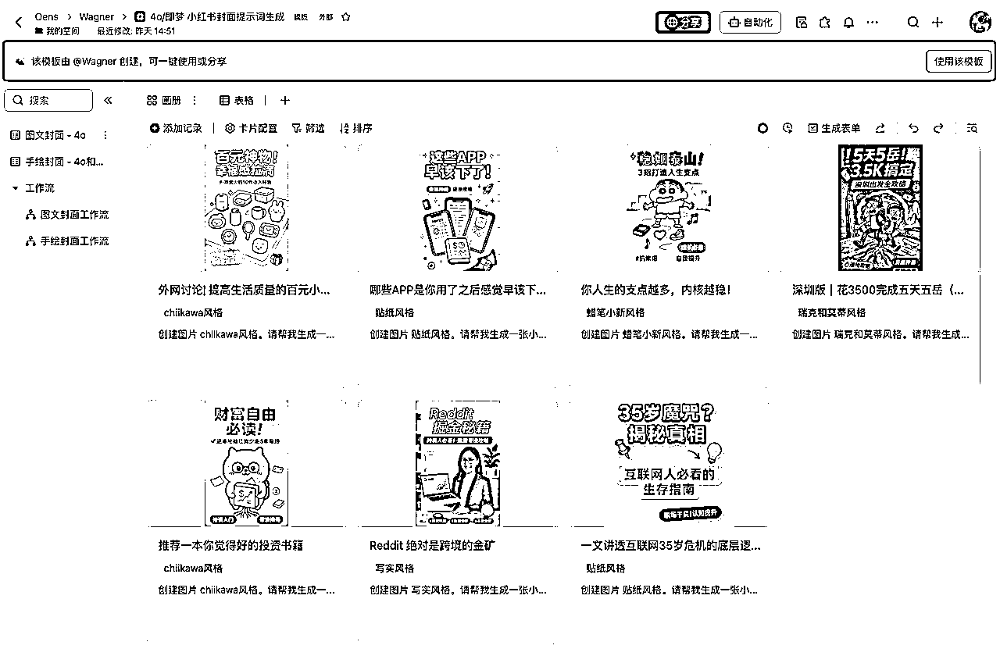
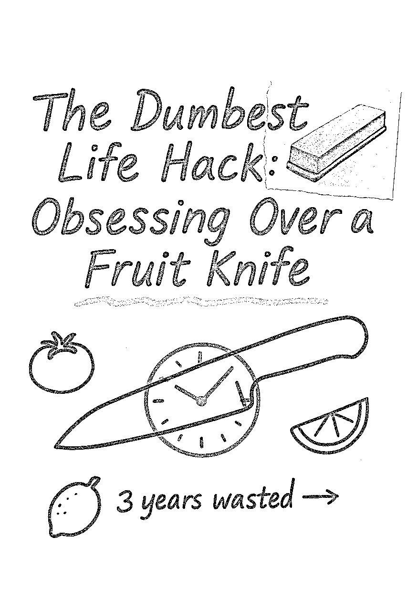
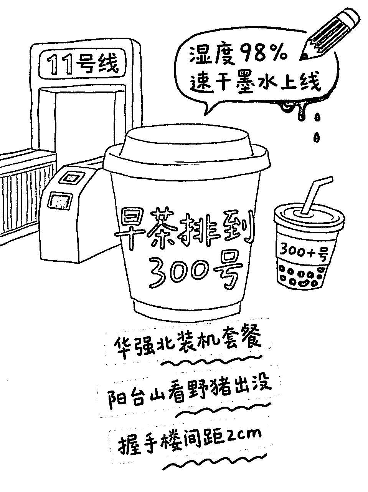
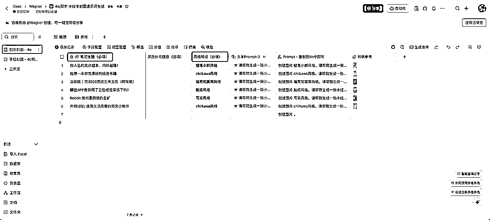
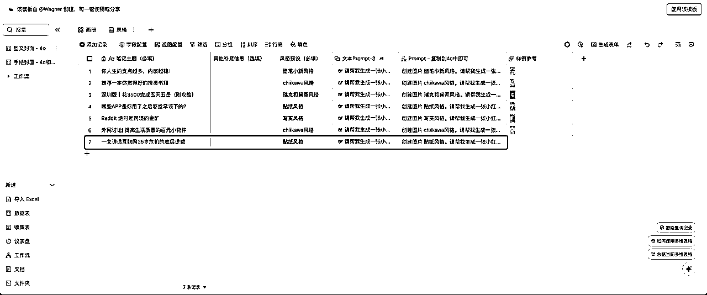
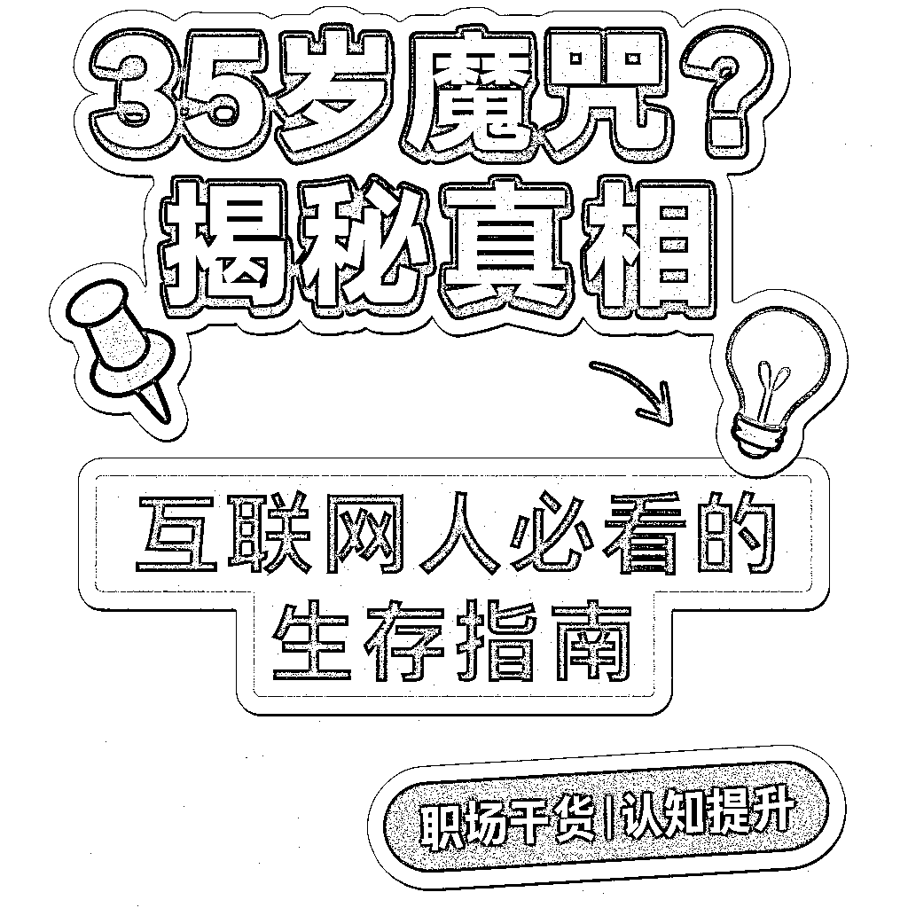
ok，案例过后，接下来就是具体的实现思路拆解。首先明确一个前提：AI并不是生产力工具，AI就是生产力本身。（非常重要！）
也就是说，要像管理员工一样管理AI。
试想我们要让一个刚入职的新人能够做出符合公司预期的产出，那么他就要知道这个岗位是做什么的，有什么任职要求、以及工作SOP、过程指标、结果指标等等，甚至说的玄乎一点还要理解一下公司的使命和价值观（说远了）。
Prompt、RAG、Workflow（工作流）等等市面上的AI技术，其实解决的核心问题都是同一个，就是：如何管理一个（甚至一群）AI。接下来，我们通过详细拆解来展示如何实现AI的产出管理。
工作标准化需要SOP的支持，对AI而言也同样适用。
如图，完整的小红书封面绘制流程是由多个步骤组合而成，且每个步骤都有不同的任务要求和输出要求。接下来就是根据流程图进行分工。
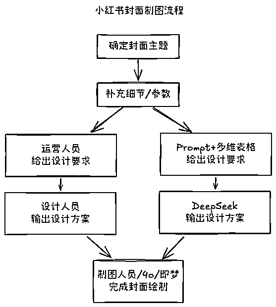
运营人员的工作要求是：
通过我提供的主题和补充信息，将prompt补充完整提供给DeepSeek进行进一步输出，也就是说，当我的需求或信息不完整时，他就不需要生成任何信息，这里通过多维表格自带的工作流实现。
你的任务是根据提供的主题、排版布局、语言、色彩方案和插图风格，生成一个结构化、视觉上引人注目的封面图。
在生成prompt时，请严格遵循以下指南：
### 布局:
明确选择一种: **横向** 或 **纵向** 排版，这里排版方向为{{布局}}。确保布局平衡，保持良好的可读性。
### 文字风格:
- **字体大小**:适中、工整的手写风格，便于阅读。
- **主标题**:加粗，使用较大的手写字体，醒目展示。
- **子要点**:使用常规墨水清晰书写，结构分明，注意间距和分支线条的排布。
### 色彩与重点标记:
- **主要内容**:使用浅色背景高亮显示，或采用独特的波浪线(~)下划线突出，具体根据{{色彩方案}}执行。
- **强调笔记**:使用不同颜色的墨水书写，以实现醒目区分，具体颜色按照{{色彩方案}}确定。
### 插图:
包含一个中央插图，插图风格为{{插图风格}}（细致的手绘图、极简风格草图，或拼贴风格的注释照片提取图）。在笔记周围策略性地放置小型相关草图或涂鸦。允许在插图上直接用钢笔风格涂鸦或标注，以营造随意自然的感觉。
### 注释与随笔记录:
模拟记号笔风格的注释、修正、趣味涂鸦、箭头和随手标注，增强视觉互动感。可选地整合与主题相关的拼贴式照片提取图，并附带注释或涂鸦。
### 语言准确性(严格):
若使用 {{语言}}，必须严格遵循公认词典与标准语法规则。若使用复杂书写系统如中文:
- 必须核对每个汉字的正确性、标准用法与准确笔顺。
- 避免使用非标准变体，务必严格确认准确性后再定稿。
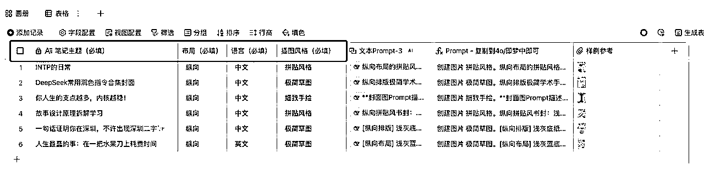
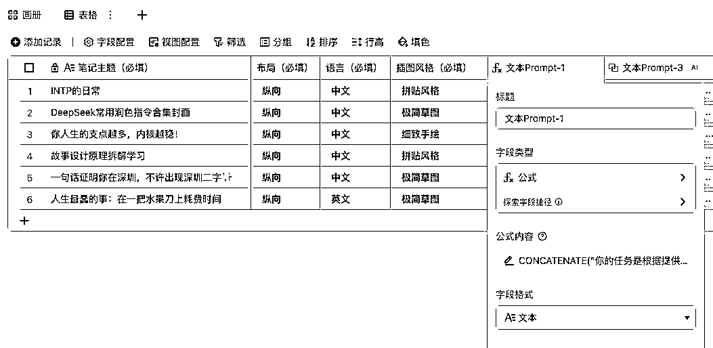
CONCATENATE("你的任务是根据提供的主题、排版布局、语言、色彩方案和插图风格，生成一个结构化、视觉上引人注目的封面图prompt。
以下是用户定义设置：
<主题>
「", [笔记主题（必填）], "」
主题>
<排版方向>
",[布局（必填）],"
排版方向>
<语言>
",[语言（必填）],"
语言>
<色彩方案>
{{色彩方案}}
色彩方案>
<插图风格>
",[插图风格（必填）],"
插图风格>
在生成prompt时，请严格遵循以下指南：
### 布局:
明确选择一种: **横向** 或 **纵向** 排版，这里排版方向为{{布局}}。确保布局平衡，保持良好的可读性。
### 文字风格:
- **字体大小**:适中、工整的手写风格，便于阅读。
- **主标题**:加粗，使用较大的手写字体，醒目展示。
- **子要点**:使用常规墨水清晰书写，结构分明，注意间距和分支线条的排布。
### 色彩与重点标记:
- **主要内容**:使用浅色背景高亮显示，或采用独特的波浪线(~)下划线突出，具体根据{{色彩方案}}执行。
- **强调笔记**:使用不同颜色的墨水书写，以实现醒目区分，具体颜色按照{{色彩方案}}确定。
### 插图:
包含一个中央插图，插图风格为{{插图风格}}（细致的手绘图、极简风格草图，或拼贴风格的注释照片提取图）。在笔记周围策略性地放置小型相关草图或涂鸦。允许在插图上直接用钢笔风格涂鸦或标注，以营造随意自然的感觉。
### 注释与随笔记录:
模拟记号笔风格的注释、修正、趣味涂鸦、箭头和随手标注，增强视觉互动感。可选地整合与主题相关的拼贴式照片提取图，并附带注释或涂鸦。
### 语言准确性(严格):
若使用 {{语言}}，必须严格遵循公认词典与标准语法规则。若使用复杂书写系统如中文:
- 必须核对每个汉字的正确性、标准用法与准确笔顺。
- 避免使用非标准变体，务必严格确认准确性后再定稿。
请现在开始生成prompt。")
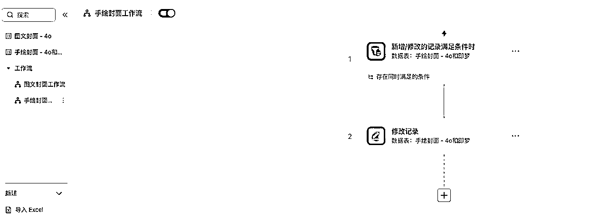
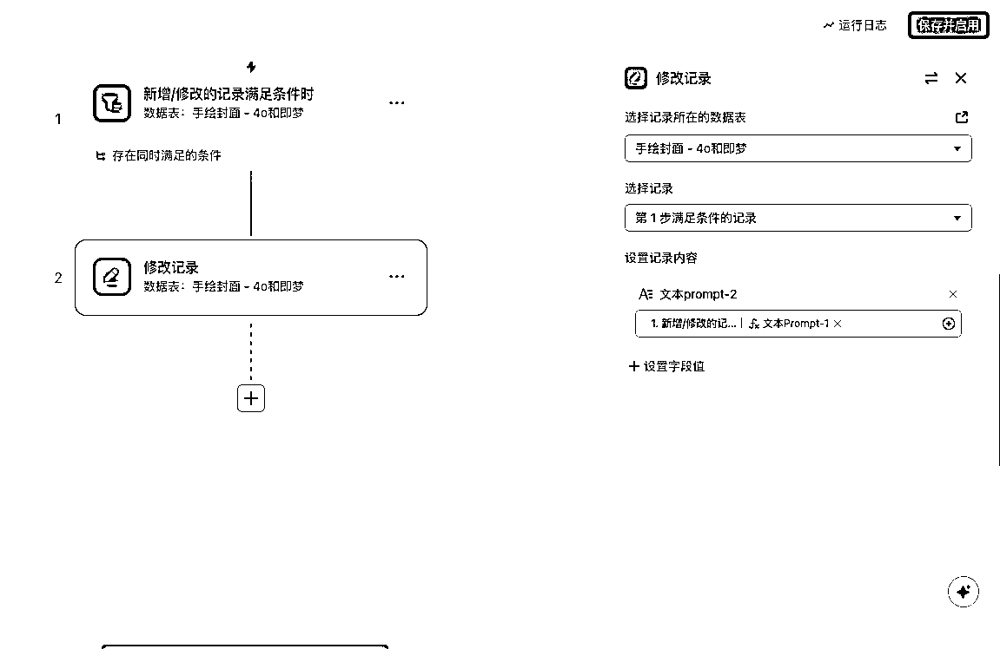
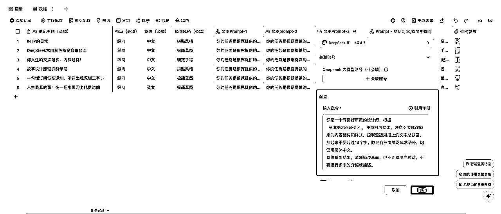
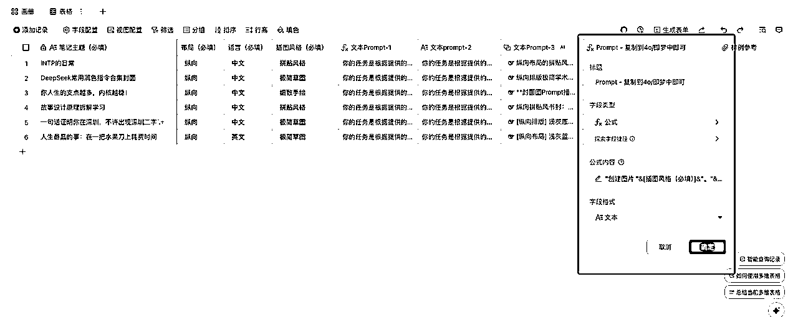
公式如下：
"创建图片 "&[插图风格（必填）]&"。"&[文本Prompt-3.输出结果]
此时的Prompt已经可以直接使用，复制到4o或即梦中即可。
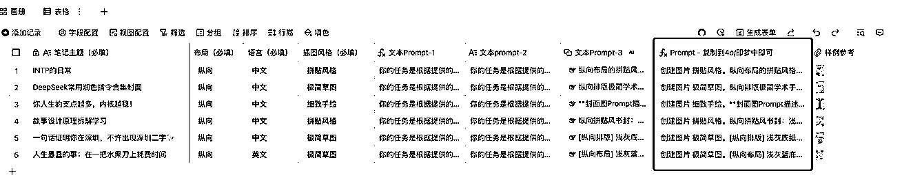
到这里，一个完整的搭建过程就告一段落。
通过“多维表格+DeepSeek”构建小红书封面生成流程，本质上是对AI生产流程的标准化重构，这套思路不仅适用于封面制作，所有已经SOP化的工作都可以根据以上方法AI化。
本文完，希望各位有所收获。